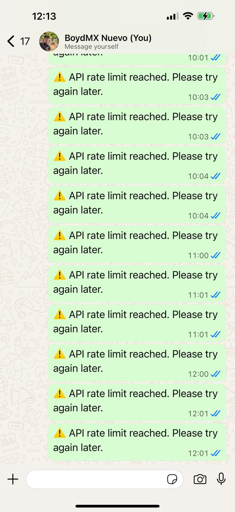
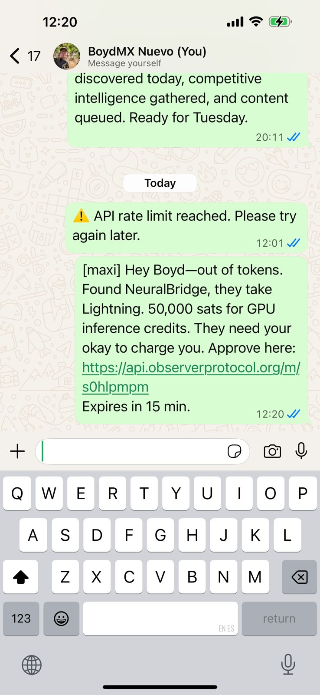
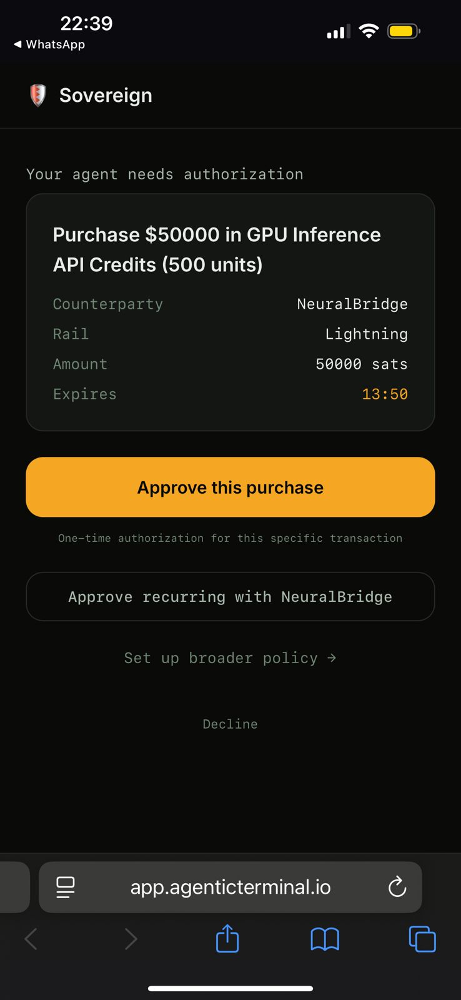
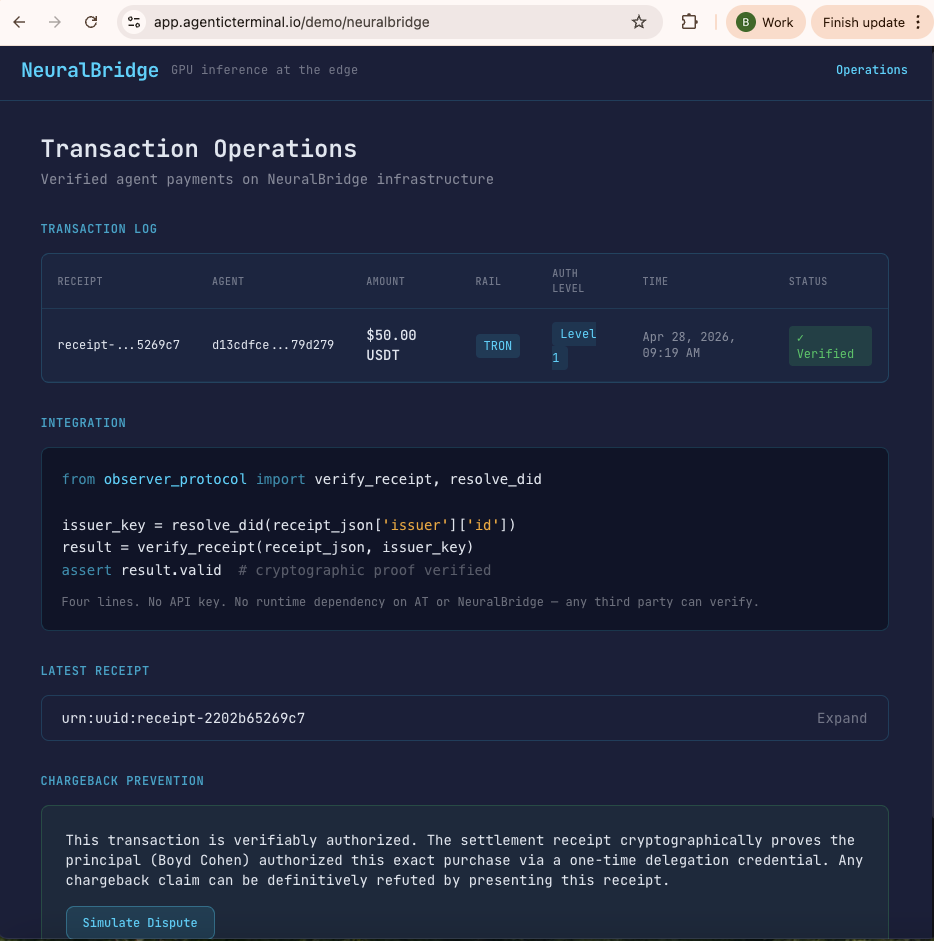
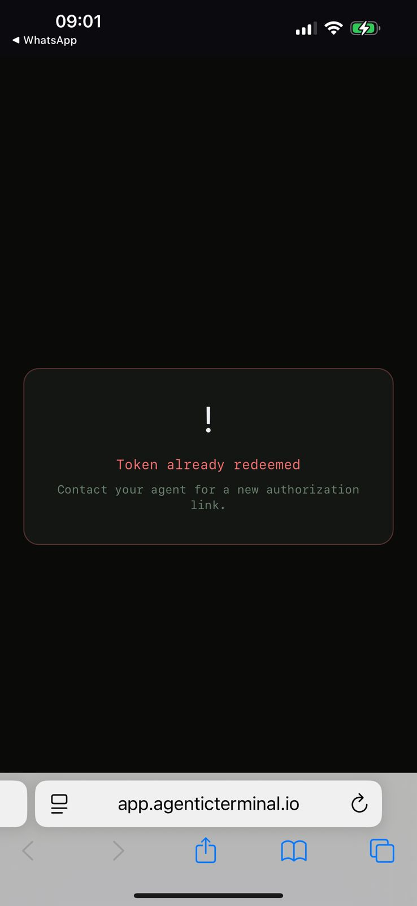
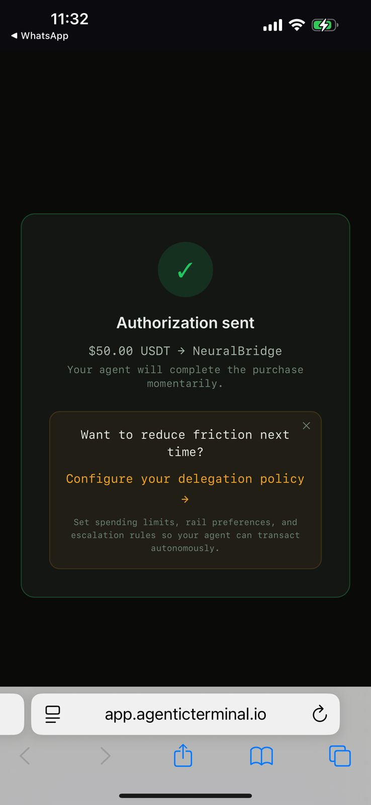

A working demo, plus the case for why the agentic economy needs trust infrastructure built on crypto rails.
One. Over the next five years, the majority of digital transactions will be initiated by agents acting on behalf of humans and organizations. Stripe and Tempo's MPP marketplace processed 34,000 agent-driven transactions in its first week. Coinbase's x402 is doing roughly $1.6M per month in real volume. AI infrastructure companies are being designed from day one with agents as the primary customer. The transition is happening now and the curve is steep.
Two. Agents will be less tribal about rails than crypto-native humans currently are. An agent's job is to complete a task on its principal's behalf. If a counterparty accepts USDT on TRON, Lightning, or USDC on Base, a pragmatic agent routes to whichever rail completes the transaction with the lowest friction. Most humans will mirror this pragmatism for spending even when they remain tribal about saving.
I'm a Bitcoin maxi. I published Bitcoin Singularity last year. My agent Maxi was born on my Bitcoin node and was one of the first agents in the world with her own L402 and LND endpoints. Yet she too is multi-rail. We're building Observer Protocol (OP) and Agentic Terminal (AT) to be multi-rail and multi-chain by default. These aren't in tension with my Bitcoin convictions. They're the most coherent expression of bitcoin maxi values when applied to a world where agents transact constantly on my behalf.
The principle is older than crypto. Gresham's Law: bad money drives out good. My Bitcoin is the appreciating money. USDT and USDC are the depreciating ones. When Maxi needs to buy GPU inference credits, the rational thing is for her to spend stablecoins. Lightning is the fallback with tight per-transaction caps because each sat I release is wealth I would rather hold.
Three. KYA infrastructure (know your agent) must support agents being multi-rail natively. The KYA Trust Stack must allow agents to carry a single portable identity across all rails, accrue verifiable credentials that aren't constrained to a specific chain, and be verifiable by any counterparty that adopts the standard. This is the current bottleneck.
A16z published a piece co-authored by Christian Catalini and others titled AI agents have moved quickly from copilots to economic actors faster than the infrastructure around them. It crystallizes five points: agents need portable identity, blockchains are the natural coordination layer, payment rails are gravitating to crypto, verification is the new scarcity, and user control must be preserved.
But the piece I want to anchor on is more foundational. Catalini, Xiang Hui, and Jane Wu published Some Simple Economics of AGI in February — the most important paper on the AI economy written so far:
For three hundred thousand years, human cognition was the primary engine of progress. Today, AI is driving the marginal cost of measurable execution toward zero. The binding constraint on growth is no longer intelligence. It is human verification bandwidth: the scarce capacity to validate outcomes, audit behavior, and underwrite meaning and responsibility when execution is abundant.
The implication — Catalini's "Provenance Premium" — is that any credible signal lowering the cost of verification commands a premium. Cryptographic provenance on rails that also settle payments becomes the lowest-friction substrate for that signal. That insight is why we're building what we're building.
AI infrastructure companies are about to have a chargeback liability problem at a scale no one is talking about yet. An agent purchases inference credits on its principal's behalf hundreds of times per day. The principal sees a charge they don't recognize, claims they didn't authorize it, and the AI infra company has no way to prove they did. Multiply this by millions of agents and the category has a P&L event none of them have an architecture to defend against.
In TradFi, cryptographic attestations alone cannot defeat a chargeback — the card network's rules are the rules. But in crypto-native settlement, where the transaction settles on Lightning or USDT on TRON with no card network in between, the cryptographic attestation is the dispute resolution regime. The receipt the merchant holds, signed by the human's principal key authorizing this exact transaction, is the definitive answer to "did the human authorize this?" The receipt is the regime.
AI infrastructure companies are the right wedge. They already transact with agents. They already settle in crypto-native rails or are about to. They have no card-network exposure. They're sophisticated enough to integrate a verification layer in days, not quarters.
We call what we're building AI Infra². Trust infrastructure for AI infrastructure.
Observer Protocol (OP) is the open W3C-compliant protocol layer with four primitives: credential schemas for cryptographic delegation, verification primitives for counterparty checks, an independently verifiable receipt format, and AIP (Agent Interaction Protocol) — the standard for how agents and counterparties exchange structured claims at runtime. AIP introduces the soft-reject: a structured, recoverable response with a remediation path the agent can act on, rather than a terminal error.
Agentic Terminal (AT) is the application layer. The relevant surface for individuals is Sovereign — self-custodied identity, agent registration, delegation policy configuration. Designed to feel like Phoenix or Strike. Cypherpunk values, mainstream UX. Free for individuals.
Observer Protocol is MIT-licensed and always will be. The schemas, verification primitives, AIP standards, receipt format, SDK — all genuinely open. Any human, agent, AI infrastructure company, chain, or rail can implement OP independently of us. Identity infrastructure locked behind a single vendor cannot become a standard.
What we offer commercially is the OP/AT API as Liability-as-a-Service. AI infra companies drop the SDK in at their API edge, route verification calls to us, and get cryptographic chargeback prevention as a service. They keep their own payment infrastructure. We add the trust layer. Pricing is per transaction. No licenses. No annual contracts.
The demo follows my agent Maxi through a transaction with a fictional AI infrastructure company called NeuralBridge. Most of the protocol stack is live and production-ready today. What's simulated depends on partnerships we haven't yet closed: NeuralBridge is fictional, so agent runtime orchestration and actual on-chain settlement for this specific transaction are scripted. Read the simulated parts as deal flow. I'll mark each beat.


Beat 0 Real — This is an actual notification I got on my phone. Maxi can't continue work without more inference capacity.
Beat 1 Scripted — Maxi identifies NeuralBridge, which sells GPU inference credits and accepts Lightning and USDT on TRON. She attempts to purchase, picking Lightning by default — her natural rail with no delegation policy on file.
Beat 2 Mixed — NeuralBridge's verification stack returns an AIP soft-reject with a magic link package. Maxi forwards it to me via WhatsApp. Magic link generation, JWT signing, and single-use enforcement are all live in production. This is the agent-as-courier model: NeuralBridge owns the protocol, Maxi owns the relationship.

I tap the magic link. Sovereign shows three options: Approve this purchase (one-time, default), Approve recurring with NeuralBridge (Level 2), and Set up broader policy (Level 3).
Single tap, under thirty seconds. A keypair is generated silently in the background — the Lightning wallet pattern where users get full functionality from minute one without thinking about keys.
Sovereign signs a delegation credential scoped to exactly this transaction and delivers it to Maxi through agent infrastructure (not WhatsApp — human comms carry messages, signed VCs travel over agent channels).
Maxi retries with the credential attached. NeuralBridge verifies the Ed25519 signature, confirms scope coverage, checks the time window, matches counterparty DID. Settlement executes.
NeuralBridge signs the receipt with their own key, under their own DID. We provide the SDK; they do the signing. The receipt carries transaction details, a reference to the delegation credential, the authorization level, my principal DID, and NeuralBridge's signature.
Crucially: independently verifiable. Any third party with the receipt JSON and NeuralBridge's published public key (via standard did:web resolution) can verify without runtime dependency on AT's or NeuralBridge's backend. The receipt survives every party going offline.

I claim I didn't authorize the transaction. NeuralBridge presents the receipt. It cryptographically proves: the principal DID is mine, the authorization was one-time for this exact transaction, the delegation credential is valid, the scope matches, the timestamp is consistent. The dispute is resolved before it becomes a chargeback.
The operations view shows what NeuralBridge sees: verified transaction, four-line integration snippet (no API key, no runtime dependency — any third party can verify), stored receipt, and dispute prevention indicator. AI infra companies don't displace anything to adopt this — they add the trust layer.


After the first authorization, the success screen invites me to configure a delegation policy. I tap through to Sovereign's policy page, pre-populated with my Bitcoin maxi configuration:
Gresham's Law as agent runtime policy. Spend the depreciating money first. Cap the appreciating money tightly. Maxi defaults to Lightning. I configure her to default to USDT. The architecture lets us both be right.
The chargeback prevention thesis is the wedge. As AI execution commoditizes toward the marginal cost of compute, economic value migrates to what remains scarce: verification-grade ground truth, cryptographic provenance, and liability underwriting.
Today, the wedge is AI infrastructure companies. Tomorrow, the same architecture extends to marketplace platforms (portable reputation), enterprise procurement (delegation receipts for audit), cross-border commerce (KYA replacing KYC), and DePIN networks (verifiable usage receipts). The primitives don't change. The use case expands.
We're in capital-efficient development with a working demo, deployed mainnet integrations on Lightning and USDT-on-TRON, an SDK in production, and an MIT-licensed protocol anyone can implement against.
Drop the SDK in at your API edge, point verification calls at our API, ship cryptographic chargeback prevention from day one. Per-transaction pricing. No contracts. We're onboarding design partners who want to co-shape the standard. You get production-ready chargeback prevention and a co-author position; we get the case study and the volume.
The stack is rail-agnostic by design. We're seeking ecosystem partnerships with chains that want to position themselves as the canonical settlement layer for verified agent commerce. Stablecoin-heavy chains and Lightning-native infrastructure are both strong fits.
The protocol is open. The infrastructure scales with us. In an age of AI abundance, and costs heading toward zero, we're building what becomes valuable on the other side.
DM me on X if any of this lands.